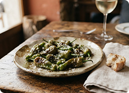
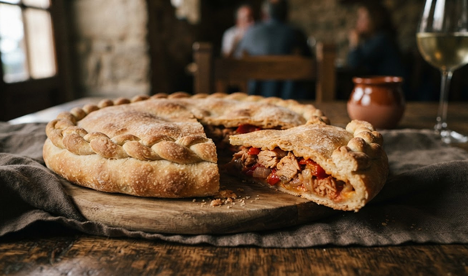

Ración de Pimientos de Padrón.
Para compartir, para descubrir y para volver. El sabor empieza en el origen y se encuentra en la mesa.
• ALÉRGENOS: Sin datos
Precio: 7,50€
LA CARTA
Para compartir, para descubrir y para volver. El sabor empieza en el origen y se encuentra en la mesa.

Masa de pan, rellenos con raíz.
PRESENTACIÓN EN VÍDEO
Un espacio preparado para incorporar un vídeo de presentación del menú. Aquí podrás mostrar el proceso, los platos y la esencia de la carta.